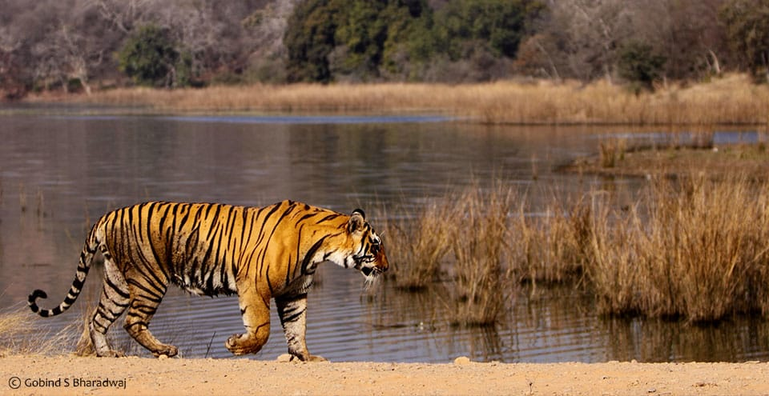
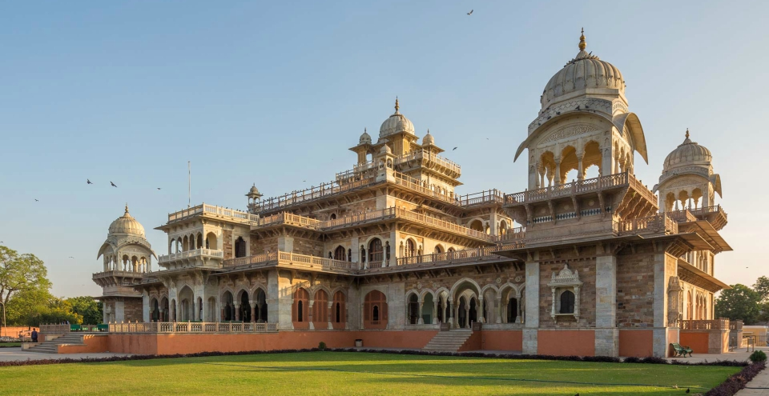
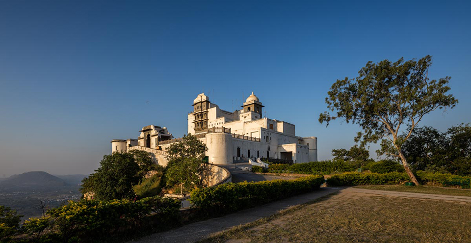

Rajasthan Tourism

राजस्थान भारत गणराज्य का क्षेत्रफल के आधार पर सबसे बड़ा राज्य है।सर्वप्रथम 1800 ई मे जार्ज थामस ने इस प्रांत को राजपूताना नाम दिया। प्रसिद्ध इतिहासकार जेम्स टाड ने "एनलस एंड एन्टीक्वीटीज आफ राजस्थान"[7] में इस राज्य का नाम रायथान या राजस्थान रखा। इस राज्य की एक अंतरराष्ट्रीय सीमा पाकिस्तान के साथ 1070 km जिसे रेड क्लिफ रेखा के नाम से जानते है, तथा 4850 km अंतर्राज्यीय सीमा जो देश के अन्य पाँच राज्यों से भी जुड़ा है।इसके दक्षिण-पश्चिम में गुजरात[8], दक्षिण-पूर्व में मध्यप्रदेश, उत्तर में पंजाब (भारत), उत्तर-पूर्व में उत्तरप्रदेश और हरियाणा है। राज्य का क्षेत्रफल 3,42,239 वर्ग कि॰मी॰ (132140 वर्ग मील) है। 2011 गणना के अनुसार राजस्थान की साक्षरता दर 66.1 % हैं। राज्य की राजधानी जयपुर हैं। भौगोलिक विशेषताओं में पश्चिम में थार मरुस्थल और घग्गर नदी का अंतिम छोर है। विश्व की पुरातन श्रेणियों में प्रमुख अरावली श्रेणी राजस्थान की एक मात्र पर्वत श्रेणी है, जो कि पर्यटन का केन्द्र है, माउंट आबू और विश्वविख्यात देलवाड़ा मंदिर सम्मिलित करती है। राजस्थान में तीन(रामगढ़ विषधारी के जुड़ने के बाद चार )बाघ अभयारण्य, मुकंदरा हिल्स[9], रणथम्भौर एवं सरिस्का हैं और भरतपुर के समीप केवलादेव राष्ट्रीय उद्यान है, जो सुदूर साइबेरिया से आने वाले सारसों और बड़ी संख्या में स्थानीय प्रजाति के अनेकानेक पक्षियों के संरक्षित-आवास के रूप में विकसित किया गया है। राजस्थान का सबसे नया संभाग भरतपुर है। राजस्थान का सबसे छोटा जिला क्षेत्रफल की दृष्टि से दुदू है, धौलपुर का क्षेत्रफल 3034 वर्ग किमी है ।और सबसे बड़ा जिला जैसलमेर हैं। जिसका क्षेत्रफल 38401 वर्ग किमी. है ।भारत का सबसे गर्म स्थान फलोदी जोधपुर है । फलोदी में सौर ऊर्जा संयंत्र बहुत ज्यादा स्थापित हो रहे है । वर्तमान में राजस्थान में 50 जिले और 10 संभाग बनाएं गए है । [10]
Famous Places in Rajasthan
पुष्कर

बावन घाटों से सजी पवित्र पुष्कर झील और ब्रह्मा जी के प्रसिद्ध मंदिर के लिए, पुष्कर सिर्फ राजस्थान और भारत में ही नहीं अपितु विदेशों में भी पहचाना जाता है। सैंकड़ों मंदिरों की घंटिया जब सांझ की वेला में एक साथ बजती हैं तो पुष्कर का पवित्र वातावरण गुंजायमान हो जाता है। जयपुर से 130 कि.मी. तथा अजमेर से 14 कि.मी. दूर सर्पाकार घाटियों से गुजरते हुए पुष्कर पहुँचा जा सकता है। माना जाता है कि 14वीं सदी का ब्रह्मा मंदिर विश्व में एक मात्र यहीं पर है। 510 मीटर की ऊँचाई पर स्थित पुष्कर तीन तरफ पहाड़ियों से घिरा हुआ है। नाग पहाड़ अर्थात सर्प की तरह बल खाए हुए यह पहाड़ अजमेर और पुष्कर के बीच में खड़ा है। पूरी दुनियां में गुलाब के फूल, गुलाब का इत्र, सैंट और ग़ुलक़न्द इसी पुष्कर से निर्यात किया जाता है। कहते हैं सबसे ज्यादा गुलाब के फूलों का निर्यात, अरब देशों को किया जाता है। पौराणिक इतिहास और मंदिरों की स्थापत्य कला पुष्कर को विरासत में मिली है। किंवदंतियों के अनुसार, भगवान ब्रह्मा जी के हाथ से एक फूल यहाँ गिरा था और तभी पवित्र पुष्कर सरोवर की इस स्थान पर उत्पत्ति मानी जाती है। हिन्दू धर्म के अनुसार अन्य तीर्थों की तरह ही पुष्कर के पवित्र सरोवर में भी स्नान करने से मोक्ष की प्राप्ति होती है।
गुरूद्वारा सिंह सभा
गुरूद्वारा सिंह सभा पुष्कर के पूर्वी भाग में स्थित है यह 19वीं सदी की शुरूआत में पहले और दसवें गुरू - श्री गुरू नानक देव जी और श्री गुरू गोविन्द सिंह जी की यात्रा की समृति में बनाया गया था।
वराह मंदिर
वराह मंदिर पुष्कर का एक प्राचीन मंदिर है। 12वीं शताब्दी के शासक राजा अन्नाजी चौहान द्वारा निर्मित यह मंदिर भगवान विष्णु के तीसरे अवतार वराह को समर्पित है। एक पौराणिक कथा के अनुसार एक राक्षस (हिरण्याक्ष) धरती को जल की गहराई में ले गया था। जहां से वराह ने उसे बचाया था। यह पुष्कर का एक जाना माना मंदिर है।
सवाई माधोपुर
यूनेस्को की विश्व धरोहर सूची में शामिल होने वाला रणथम्भौर का क़िला, ऐतिहासिक और रोमांचक है। विन्ध्या और अरावली की पहाड़ियों से घिरा यह क्षेत्र क़िले, मंदिर और रणथम्भौर राष्ट्रीय उद्यान के लिए, पर्यटकों की पहली पसंद है। कुछ इलाके मैदानी, कुछ पहाड़ी और कुछ जंगलों से घिरे होने के कारण, यहाँ कई ऐतिहासिक स्थल हैं, जो अन्तर्राष्ट्रीय पर्यटकों को आकर्षित करते हैं। जयपुर व दिल्ली से राष्ट्रीय राजमार्ग 11 व 12 के द्वारा सवाई माधोपुर पहुँचा जा सकता है। 18वीं शताब्दी में जयपुर के महाराजा सवाई माधोसिंह प्रथम ने इस शहर की स्थापना की थी तथा उन्हीं के नाम पर, इसका नाम सवाई माधोपुर रखा गया। किले के प्रमुख शासक राव राजा हम्मीर सिंह चौहान थे, जिन्होंने 1296 ई. के आस पास यहाँ शासन किया तथा उनके द्वारा किले, तालाब और झील का निर्माण देख कर उनके कला-प्रेम का अन्दाज़ा लगाया जा सकता है। क़िले के अंदर स्थित गणेश मंदिर, बादल महल, जँवरा भँवरा अन्नागार, दिल्ली दरवाजा, हम्मीर महल, कचहरी, तोरणद्वार, सामंतों की हवेली, 32 खम्भों वाली छतरी, मस्जिद आदि दर्शनीय स्थल हैं। ब्रिटिश शासन काल के दौरान जयपुर और सवाई माधोपुर के बीच एक रेल लाइन बिछाई गई थी, जिसके कारण सवाई माधोपुर, पूरे राज्य में एक महत्वपूर्ण केन्द्र स्थान के रूप में जाना गया। अनेक राजपूत राजाओं, गोविन्द से वाग्भट्ट तक, राणा कुंभा से अकबर और औरंगजेब तक, इस शहर को सभी शासकों द्वारा संरक्षित, सवंर्धित किया गया। नवीनीकरण और सौन्दर्यीकरण राव हम्मीर सिंह के समय सर्वाधिक हुआ।
खंडार किला
कहते हैं इस क़िले के राजाओं ने कभी हार नहीं देखी। सवाई माधोपुर से 45 कि.मी. दूरी पर ’खंडार किला’ पर्यटकों के लिए एक भव्य स्थल है। मेवाड़ के सिसोदिया राजाओं ने लंबे समय तक इस वैभवशाली और अजेय किले में सुरक्षित रह कर राज किया था। बाद में इसे मुग़लों ने जीत लिया था।
जामा मस्जिद
इस चहल-पहल वाले शहर के मध्य में स्थित जामा मस्जिद राजस्थान की बेहतरीन मस्जिदों में से एक है। अंदर और बाहर दोनों जगह आपस में भली प्रकार गुथे हुए अलंरणों वाले भित्तिचित्रों के साथ मस्जिद में अभी तक प्राचीन वैभव विद्यमान है। इसका निर्माण टोंक के प्रथम नवाब, नवाब अमीर ख़ान द्वारा शुरू किया गया और उनके पुत्र ने इसे 1298 में पूरा करवाया।
जयपुर
जयपुर की स्थापना सन् 1727 में की गई थी। आमेर के राजा जयसिंह द्वितीय द्वारा इस शहर का निर्माण करवाया गया। बढ़ती आबादी और पानी की कमी के कारण उन्होंने अपनी राजधानी को आमेर से इस नए शहर जयपुर में स्थानान्तरित कर दिया। इस शहर की बसावट तथा वास्तु, प्रसिद्ध वास्तुकार विद्याधर भट्टाचार्य के सिद्धान्तों के अनुरूप की। 1876 में जयपुर के इतिहास में एक नया अध्याय जुड़ गया जब प्रिंस ऑफ वेल्स ने भारत का दौरा किया। उनके स्वागत के लिए, तत्कालीन महाराजा रामसिंह ने पूरे शहर को गुलाबी (हिर्मिची) रंग में रंगवाया। आमेर, नाहरगढ़ और जयगढ़ के किले तथा गुलाबी नगर जयपुर स्वागत के लिए तैयार हो गया। सारी दुनियाँ में अपनी तरह का पहला नियोजित शहर बना जयपुर। अपने रंग-बिरंगे रत्नों और आभूषणों के लिए प्रसिद्ध, राजस्थान की राजधानी अपने वैभवपूर्ण इतिहास के साथ, सबसे बड़ी पर्यटन नगरी बन गया है। पारंपरिक तथा आधुनिकता का सम्मिश्रण, इस शहर की संस्कृति को अभूतपूर्व बनाता है। पर्यटन के स्वर्णिम त्रिकोण (गोल्डन-ट्राएंगल) का एक कोण, जयपुर है - जिसमें दिल्ली, आगरा और जयपुर शामिल हैं।
जयगढ़ फोर्ट
सन् 1726 में, महाराजा जयसिंह द्वितीय द्वारा यह किला आमेर की सुरक्षा के लिए बनवाया गया था। इसमें बने शस्त्रागार, अनूठा शस्त्र संग्रहालय, तोपें बनाने का कारखाना तथा विश्व की सबसे बड़ी तोप ‘जयवाण’ के कारण, राजस्थान में आने वाला प्रत्येक पर्यटक, जयपुर आकर इस तोप को जरूर देखना चाहता है। इस तोप को एक बार चलाया गया था जिससे शहर से 35 कि.मी. दूर एक तालाब का गड्ढा बन गया था। इसकी लम्बाई 31 फीट 3 इंच है तथा वजन 50 टन है। इसके 8 मीटर लंबे बैरल में 100 किलो गन पाउडर भरा जाता था।
गोविन्द देव जी मंदिर
श्री गोविन्द देव जी की आकर्षक प्रतिमा सवाई जयसिंह वृन्दावन से जयपुर लाए थे। जो यहाँ पूरे सम्मान से शहर के परकोटे में स्थित श्री गोविन्द देव जी मंदिर में स्थापित की गई। शाही परिवार और स्थानीय लोगों द्वारा पूजनीय गोविन्द देवजी में सात झांकियों के माध्यम से दर्शन की समुचित व्यवस्था है।
उदयपुर
‘‘वेनिस ऑफ द ईस्ट’’ नाम दिया गया है इस शहर को। झीलों की नगरी उदयपुर अरावली की पहाड़ियों से घिरा हुआ है। प्रसिद्ध लेक पैलेस पिछौला झील के मध्य में स्थित है जो कि उदयपुर के सबसे सुंदर स्थलों में से एक है। इसकी खूबसूरती दुनियां भर में मशहूर है। इस शहर की स्थापना 1553 ई. में महाराणा उदयसिंह द्वितीय ने की थी, जिसे मेवाड़ राज्य की राजधानी घोषित किया गया था। यह नागदा के दक्षिण पश्चिम की घुमावदार पहाड़ियों और गिर्वा घाटी में स्थित है। नीली झीलों, अरावली की पहाड़ियों और हरे भरे जंगलों से घिरा उदयपुर शहर एक वैभवपूर्ण पर्यटन स्थल है। यहाँ पिछोला झील के बीच, सीप में मोती की तरह नज़र आता है - लेक पैलेस, जो यहाँ के सबसे प्रसिद्ध स्थलों में से एक है। एशिया की दूसरी सबसे बड़ी, मानव निर्मित मीठे पानी की जयसमंद झील भी उदयपुर ज़िले में है। वैभवशाली सिटी पैलेस और सज्जनगढ़ पैलेस स्थापत्य कला के बेहतरीन नमूने हैं। उदयपुर में संगमरमर और जस्ते की भी खानें हैं।
आहड़ संग्रहालय
इस संग्रहालय में मिट्टी के बर्तनों का एक छोटा, लेकिन दुर्लभ संग्रह हैं। जिनमें से कुछ 1700 ईसा पूर्व के हैं। पुरातात्विक खोजों से प्राप्त प्रतिमाएं भी यहाँ देखी जा सकती हैं। यहां का विशेष आकर्षण बुद्ध की 10वीं शताब्दी की धातु प्रतिमा है।
फ़तेह सागर झील
पिछोला के उत्तर में, पहाड़ों और वन संपदा के किनारे स्थित यह रमणीय झील, एक नहर द्वारा पिछोला झील से जुड़ी एक कृत्रिम झील है। झील के मध्य सुंदर नेहरू गार्डन के साथ साथ एक द्वीप पर उदयपुर की सौर वेधशाला भी है। इसे पहले ’कनॉट बन्ध’ कहा जाता था क्योंकि इसका उद्घाटन ड्यूक ऑफ कनॉट के द्वारा किया गया था।